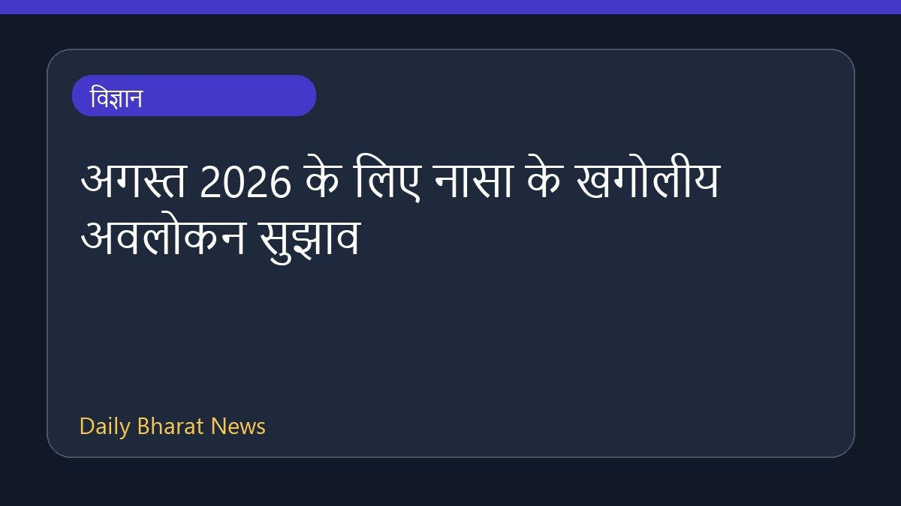

अगस्त 2026 के लिए नासा के खगोलीय अवलोकन सुझाव

नासा के अनुसार अगस्त 2026 में खगोल प्रेमियों के लिए कई रोमांचक घटनाएं देखने को मिलेंगी। इस महीने की मुख्य खगोलीय घटनाओं में एक सूर्य ग्रहण, साल के बेहतरीन उल्का बौछारों में से एक पर्सिड्स, शाम के आकाश में अत्यधिक चमकीला शुक्र ग्रह और महीने के अंत में एक गहरा आंशिक चंद्र ग्रहण शामिल हैं। इन सभी घटनाओं से अगस्त का महीना खगोलीय गतिविधियों के लिहाज से बेहद खास रहने वाला है, जिसकी पूरी जानकारी नासा द्वारा साझा की गई है।
मूल स्रोत: NASA
What’s Up: August 2026 Skywatching Tips from NASA ↗
What’s Up: August 2026 Skywatching Tips from NASA ↗